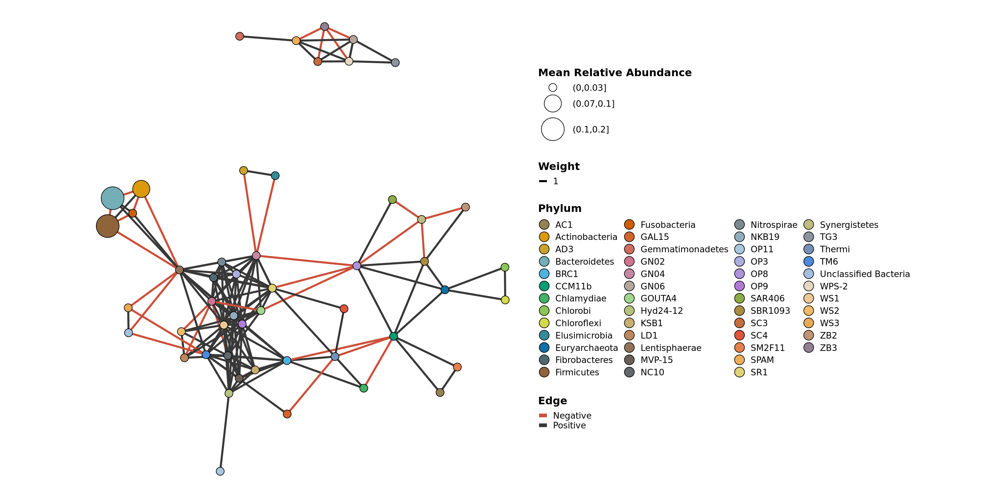
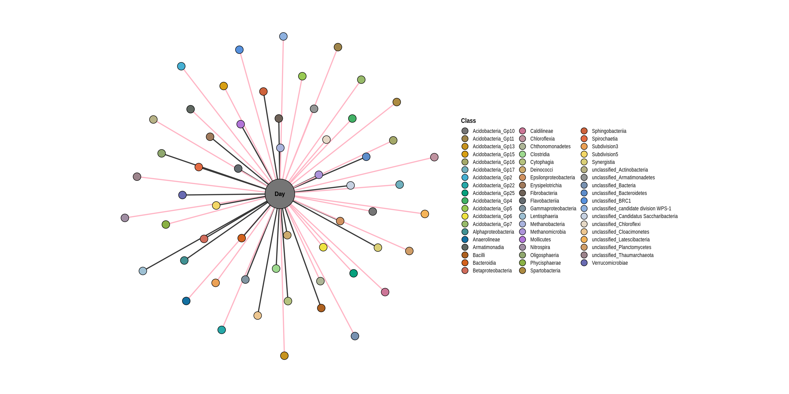

Create a ggplot object of the co-occurrence network.
Usage
co_occurrence_network(phyloseq_obj, treatment = NULL, subset = NULL, co_occurrence_table = NULL, classification = NULL, node_colors = 'default', cluster = FALSE, cluster_colors = 'default', buffer = 0.5)
Arguments
| Call | Description |
|---|---|
phyloseq_obj |
A phyloseq-class object. It must contain sample_data with information about each sample, and it must contain tax_table with information about each taxa/gene. |
treatment |
Column name as a string or numeric in the sample_data. This can be a vector of multiple columns and they will be combined into a new column. |
subset |
A factor within the treatment. This will remove any samples that to not contain this factor. This can be a vector of multiple factors to subset on. |
co_occurrence_table |
Table of the co-occurrence of taxa/genes in the phyloseq_obj, computed using co_occurrence(). If no table is given, it will be computed with the phyloseq_obj, using the given treatment and p = 0.05 with a rho cut-off of 0.8. |
classification |
Column name as a string or numeric in the tax_table for the factor to use for node colors. |
node_colors |
Name of a color set from the RColorBrewer package or a vector palete of R-accepted colors. |
cluster |
if TRUE, will use igraph’s cluster_fast_greedy method. Alternatively, you may pass a vector of cluster assignments with order corresponding to the order of the taxa_names in the phyloseq_obj. |
cluster_colors |
Name of a color set from the RColorBrewer package or a vector palete of R-accepted colors. |
buffer |
Amount of space beyond the points to extend the cluster (aesthetic argument). |
Examples
co_occurrence_network(soil_column, treatment = c('Matrix', 'Treatment'), subset = 'Soil Amended', co_occurrence_table = NULL, classification = 'Phylum')
Create an layout_igraph object of the co-occurrence from a phyloseq object. This can be input into the co_occurrence_network function, or used for other network creating scripts. The purpose is to be able to create reproducible and comparable graphics.
Usage
network_layout_ps(phyloseq_obj, classification = NULL, treatment = NULL, subset = NULL, co_occurrence_table = NULL, algorithm = 'fr')
Arguments
| Call | Description |
|---|---|
phyloseq_obj |
A phyloseq-class object. It must contain sample_data with information about each sample, and it must contain tax_table with information about each taxa/gene. |
treatment |
Column name as a string or numeric in the sample_data. This can be a vector of multiple columns and they will be combined into a new column. |
subset |
A factor within the treatment. This will remove any samples that to not contain this factor. This can be a vector of multiple factors to subset on. |
co_occurrence_table |
Table of the co-occurrence of taxa/genes in the phyloseq_obj, computed using co_occurrence(). If no table is given, it will be computed with the phyloseq_obj, using the given treatment and p = 0.05 with a rho cut-off of 0.8. |
classification |
Column name as a string or numeric in the tax_table for the factor to use for node colors. |
algorithm |
Supported igraph::layout_ algorithm. |
Examples
network_layout_ps(soil_column, treatment = c('Matrix', 'Treatment'), subset = 'Soil Amended', algorithm = 'kk')Create a network ggplot object of the correlation of taxa and sample variables from a phyloseq object. This may also be refered to as a bipartite graph. Function from the phylosmith-package.
Usage
variable_correlation_network(phyloseq_obj, variables, classification = NULL,
treatment = NULL, subset = NULL, correlation_table = NULL, method = 'spearman',
rho_threshold = c(-0.01, 0.01), p_threshold = 0.05, colors = 'default',
negative_positive_colors = c('pink1', 'gray22'))
Arguments
| Call | Description |
|---|---|
phyloseq_obj |
A phyloseq-class object. It must contain sample_data with information about each sample, and it must contain tax_table with information about each taxa/gene. |
variables |
Numerical factors within the in the sample_data to correlate with the abundance data. |
classification |
Column name as a string or numeric in the tax_table for the factor to conglomerate by. |
treatment |
Column name as a string or numeric in the sample_data. This can be a vector of multiple columns and they will be combined into a new column. |
subset |
A factor within the treatment. This will remove any samples that to not contain this factor. This can be a vector of multiple factors to subset on. |
correlation_table |
Table of the correlation of taxa/variables in the phyloseq_ob}, computed using variable_correlation. If no table is given, it will be computed with the phyloseq_obj, using the given treatment and p = 0.05. |
method |
Which correlation method to calculate, “pearson”, “spearman”. |
rho_threshold |
Cutoffs to use to subset the correlation_table by correlation values. |
p_threshold |
Cutoffs to use to subset the correlation_table by singnificance values. |
colors |
Name of a color set from the RColorBrewer package or a vector palete of R-accepted colors. |
negative_positive_colors |
colors to use for the edges to represent negative and positive correlations. Defaul (‘pink1’, ‘gray22’) |
Examples
variable_correlation_network(soil_column, 'Day', 'Class', c('Matrix','Treatment'), 'Soil Amended')
Schuyler Smith
Ph.D. Student - Bioinformatics and Computational Biology
Iowa State University. Ames, IA.